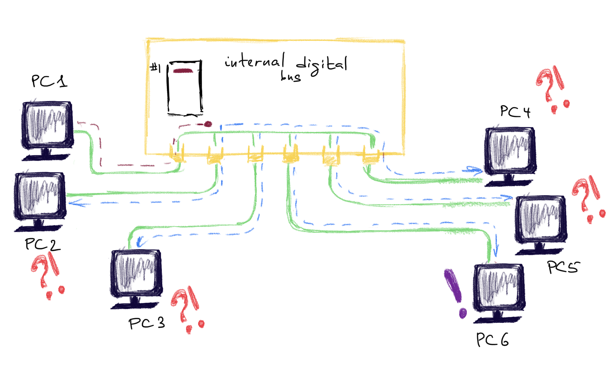
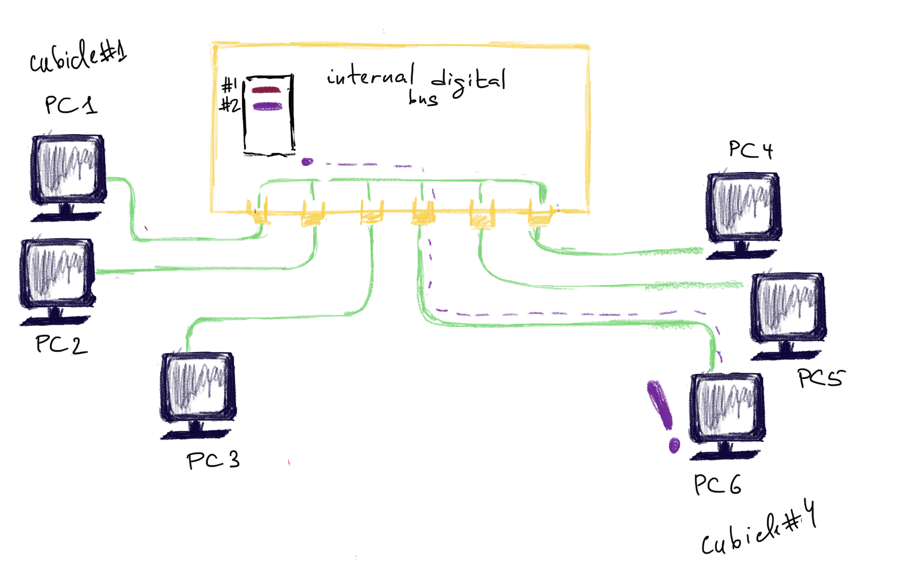
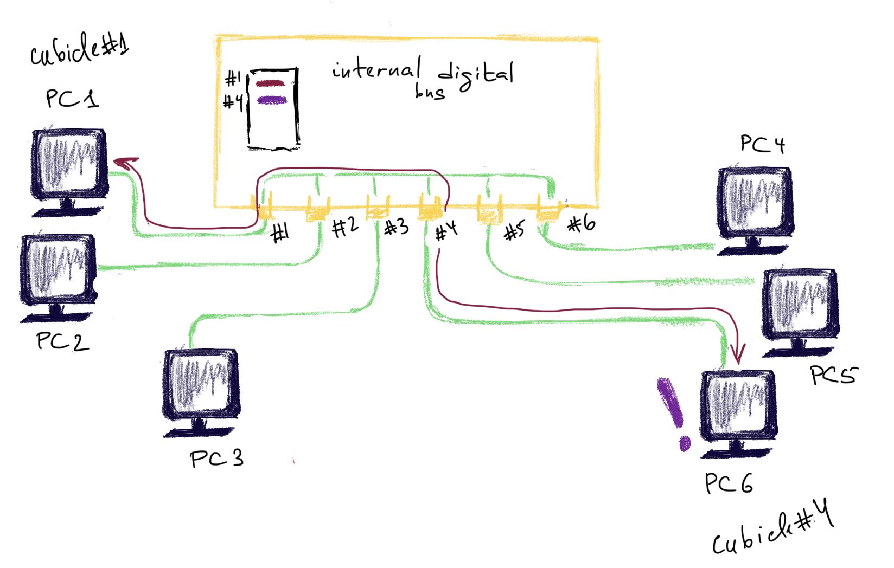

This article is about the network devices that operate on the Data Link layer. These devices know. nothing about IP addresses or TCP/UDP ports. They wouldn’t know what to do with them. MAC addresses is all they know and care about. The unit of information is called a frame.
Switch
Unlike a hub, a switch diffirentiates between the packets and forwards the packets according to the MACs specified in the frame. They keep track of MACs and corresponding switch ports in a MAC filtering table (can hold upto 8000 MAC addresses) once they learn these MACs. Use ASIC’s (Application Specific Integrated Curcuits). They are faster than routers, cause they don’t analyse IP layer => 1 thing less to do, 1 second faster 😸. So they work at wire speed.
Steps:
- Learn the addresses
- Forward and filter decisions
- Loop avoidance
Step 1 Address Learning
When the switch is new in the district and doesn’t know anyone yet, it looks pretty much the same as an ordinary hub (see here). But unlike a hub this switch has a notebook 📓 (empty yet) and a pen 🖊 . It’s called the MAC filtering table. The switch 🧑💼is sitting still until someone comes up with a request. It’s sitting in a big building with lots of cubicles (very long time ago that was what it looked like when someone wanted to make a call to another city). For the switch 🧑💼all these cubicles are assigned a number.
For example, PC1 🖥️ with MAC address aa:aa:aa:aa:aa:aa comes by and asks to send a frame to PC6 🖥️ with MAC bb:bb:bb:bb:bb:bb. The switch doesn’t know who is who yet. He says:
- Hey, PC1 🖥️ with MAC address aa:aa:aa:aa:aa:aa. Nice to meet you. I will write your MAC in my notebook 📓 and you go and wait in the cubicle number 1. I’ll let you know the response as soon as I get it.
- OK, - says PC1 🖥️ and enters a cubicle 1.
The switch now puts 1 in front of PC1’s MAC address. Now, the job of the switch 🧑💼is to find PC6 with MAC bb:bb:bb:bb:bb:bb and assign a cubicle to it as well.
How can it achieve that?
The first option is to to ask every machine in the neighbourhood until it finally finds its fellow, using, for example, something like ARP protocol but for Data Link layer. But this would take O(n) time for n machines. The more machines are in the district, the more time is needed to asks everyone. The worst case is when the machine needed is the last asked (that’s why O(n)).
The second option is the one actually being used. The switch 🧑💼sends this frame from PC1 to every machine in the neighbourhood (yes, it’s a violation of confidentiality…). It’s called broadcasting. Whoever responds - is PC6.

The switch 🧑💼now puts down its MAC (bb:bb:bb:bb:bb:bb) and assigns it to the cubilcle #4 .

PC6 🖥️ goes to the cubicle 4, reads the frame from PC1 and sends a response. Now the switch checks against his doodle (which indicate that PC1 is in the cubicle 1) and delievers the response to the cubicle 1 where PC1 is still waiting 🖥️ (and not picking up his nose ❓).

From now on all frames between PC1 and PC6 will be forwarded without prior flooding and violating the confidentiality.

Step 2 Forwarding and Filtering
The destination is known, forward to the correct port. If the destination is not known yet, find out and assing a port to that address.
Step 3 Loop avoidance (optional)
For redundant switches (additional switches to provide redundancy in case one fails). STP (spanning tree protocol provides protection for such cases). STP finds redundant links and shuts them down.
Broadcast storm.
First, what’s a broadcast? It basically means “Tell everyone”. It’s a message that any device on a network can send to a MAC address that no one actually has. When a network device receives a frame with this precise MAC address, it knows it should forward it to everyone connected to this network. When a PC’s NIC (network card) gets such a frame, it reads it as if it were sent to its own MAC. MAC - it’s an identifier of the machine on the network. While IPs (upper layers of OSI) can be shared among several devices, MACs cannot.
If you only have one switch 👨🎨, it may go ill 🤧 and stop working. The whole network will then go down. It’s not a desired behaviour and needs to be solved. So, we add a second switch to the network 👨🍳 . Sounds great? Well, it is if your switch supports STP, but what happens if it doesn’t?
Let’s assume the following infrastructure.
There are two cables. One for PC1 💻 ,2💻 and 3💻, another is for PC4 🖥️ ,5🖥️ and 6🖥️. All of these PC’s are in the same LAN (they know each other pretty well and receive the same broadcast messages) and the cables are connected with two switches: the switch #1 👨🎨 and the switch #2 👨🍳 .
Both switches have their ports #1 connected to the cable #1 with PCs 1,2,3 and their ports #2 to the cable #2 with PCs 4,5,6. For some reason, PC1 💻 from decides to send a broadcast “Hey, guys! Check out this beautiful spam letter!” Everyone is facepalming at first 🤦♀️, but… . What’s happening? PCs 2,3,4,5,6 and even PC1 💻 itself keep receiving this message “Hey, guys! Check out this beautiful spam letter!” again and again. Facepalming is not that funny anymore and all the digital guys start feeling uncomfortable and scared 😱. The both switches at the same time are 🤷♂️ 🤷♂️ and keep doing somethin suspicious.
So, what happened?
PC1 💻 sent a stupid broadcast message, remember?
-
This message reached the port #1 of the switch #1 👨🎨. The switch #1 👨🎨 forwarded this message to all other PC’s in the network #2 . This messages runs happily along the wire, being delievered to the PCs of the second cable and also to the port #2 of the switch #2 👨🍳. The switch #2 is very responsible and forwards this message back to the cable #1 from where this message has originated.
-
Now, this ridiculous message is sent along the wire #1 and reaches PC1 (which has sent it), 2 and 3 and also the port #1 of the brother-switch #1 👨🎨. It’s just started smelling very bad… .
Now, re-read paragraphs 1 and 2, the re-read again and again and again… . That’s what’s called a broadcast storm.
Types of the switches
Store & Forward
The most popular mode and the one which has the highest latency. In this mode the whole frame is stored in a buffer and checked for errors before forwarding. Because of this additional work, the latency gets higher.
According to firewall.cx, this table represents min RAM needed for this mode on the switch not to cause you troubles:
| Number of ports | Minimum RAM | Preferred ram |
|---|---|---|
| 5 | 256 Kb | 512 Kb |
| 8 | 512 Kb | 1-2 Mb |
| 16 | 2 Mb | 4-6 Mb |
| 24 | 4 Mb | 6-8 Mb |
Cut-through
Second popular option. Only reads the frame until the destination MAC is detected. Doesn’t check for errors.
Fragment free
Reads the first 64 bytes only (min frame size). The reason for this is because almost all collisions will happen within the first 64 bytes of a frame. Not very popular.
Bridge
Bridges are pretty much the same, but have a few differences:
- Bridges are software based, while switches are hardware based because they use an ASICs chip to help them make filtering decisions ❓
- Bridges can only have one spanning-tree instance per bridge, while switches can have many ❓
- Bridges can only have upto 16 ports, while a switch can have hundreds. Why? ❓
References
[1] About switches and bridges - http://www.firewall.cx/networking-topics/general-networking/236-switches-bridges.html